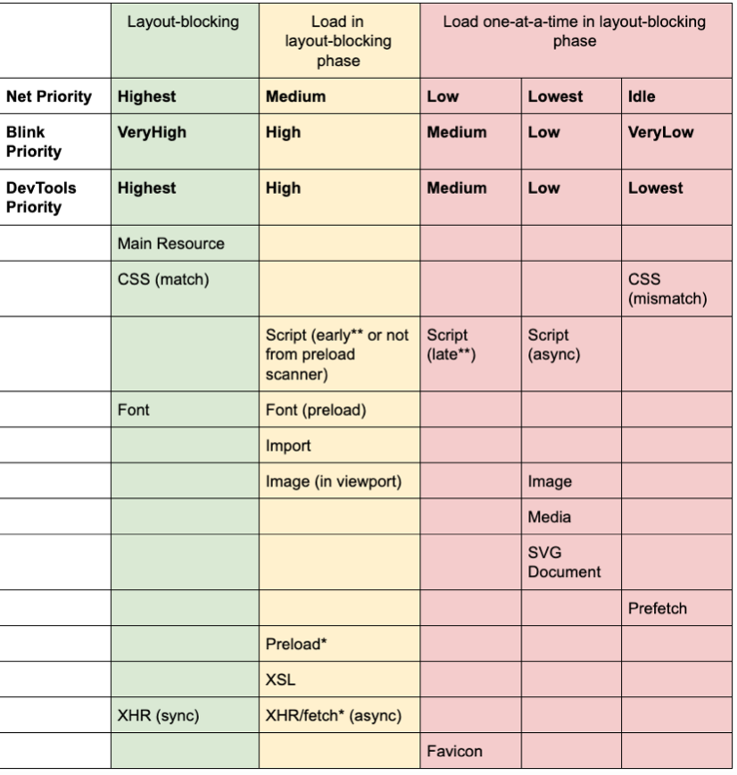
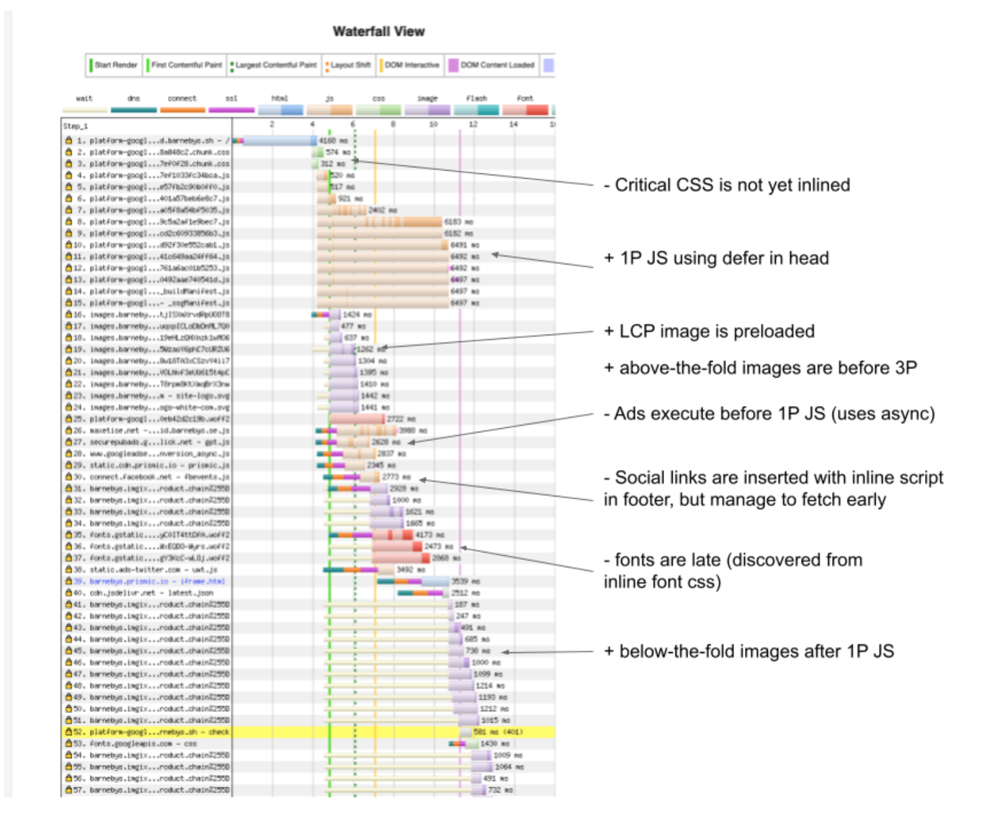

أنماط JavaScript
تحسين تسلسل التحميل لديك
ملاحظة: يتأثر هذا المقال بشدة برؤى فريق Aurora في Chrome، ولا سيما Shubhie Panicker الذي يبحث في أفضل تسلسل تحميل.
في كل تحميل ناجح لصفحة ويب، تصبح بعض المكونات والموارد الحرجة متاحة في الوقت المناسب تمامًا لتقديم تجربة تحميل سلسة. ويضمن هذا أن يدرك المستخدمون أن أداء التطبيق (performance) ممتاز. وينبغي أن يترجم ذلك إلى اجتياز مؤشرات Web Vitals الأساسية.
تعتمد المقاييس المهمة مثل First Content Paint وLargest Contentful Paint وFirst Input Delay وغيرها، المستخدمة في قياس الأداء، مباشرةً على تسلسل تحميل الموارد الحرجة. فمثلًا، لا يمكن للصفحة أن تحقق LCP إذا لم تُحمّل مورد حرج مثل الصورة الرئيسية. يتناول هذا المقال العلاقة بين تسلسل تحميل الموارد ومؤشرات الويب الأساسية. هدفنا تقديم إرشادات واضحة حول كيفية تحسين تسلسل التحميل للحصول على مؤشرات أفضل.
قبل أن نضع تسلسل تحميل مثاليًا، لنحاول أولًا فهم سبب صعوبة الحصول على التسلسل الصحيح.
لماذا يصعب تحقيق التحميل الأمثل؟
حظينا بفرصة فريدة للعمل على تحليل الأداء للعديد من مواقع الشركاء. حددنا مشكلات متعددة متشابهة كانت تعيق التحميل الفعال للصفحات عبر مواقع الشركاء المختلفين.
غالبًا ما توجد فجوة حرجة بين توقعات المطورين وكيفية أولوية المتصفح للموارد في الصفحة. ويؤدي هذا غالبًا إلى درجات أداء دون المستوى. حللنا الأمر أكثر واكتشفنا سبب هذه الفجوة، وتلخص النقاط التالية جوهر التحليل.
تسلسل دون المستوى الأمثل
يتطلب تحسين مؤشرات Web Vitals ليس فقط فهمًا جيدًا لما يمثله كل مقياس، بل أيضًا الترتيب الذي تحدث به والعلاقة بينه وبين الموارد الحرجة المختلفة. تحدث FCP قبل LCP، وتحدث LCP قبل FID. ومن ثم، ينبغي أولوية الموارد اللازمة لتحقيق FCP على الموارد التي يتطلبها LCP، ثم الموارد التي يتطلبها FID.
كثيرًا ما لا تُرتب الموارد ولا تُنسق في الترتيب الصحيح. قد يكون السبب أن المطورين لا يعرفون اعتماد المقاييس على تحميل الموارد. ونتيجة لذلك، لا تكون الموارد ذات الصلة متاحة أحيانًا في الوقت المناسب لإطلاق المقياس المقابل.
أمثلة:
أ) عندما تُطلق FCP، ينبغي أن تكون الصورة الرئيسية متاحة لإطلاق LCP. ب) عندما تُطلق LCP، ينبغي أن يكون JavaScript (JS) قد نُزّل وحُلّل وكان جاهزًا، أو يكون قيد التنفيذ بالفعل، لإتاحة التفاعل (FID).
استخدام الشبكة ووحدة المعالجة المركزية (CPU)
لا تُنسق الموارد بصورة كافية أيضًا لضمان الاستفادة المثلى من وحدة المعالجة المركزية والشبكة. ويؤدي ذلك إلى «وقت ميت» على المعالج عندما تكون العملية مقيّدة بالشبكة، والعكس.
مثال رائع لذلك هو السكربتات التي قد تُنزّل بصورة متزامنة أو متتابعة. عند تقسيم النطاق الترددي أثناء التنزيل المتزامن، يكون الوقت الإجمالي لتنزيل جميع السكربتات نفسه للتنزيل المتسلسل والمتزامن. وإذا نزّلت السكربتات بصورة متزامنة، فلا نستفيد بشكل كافٍ من المعالج أثناء التنزيل. أما إذا نزّلتها بصورة متتابعة، فيستطيع المعالج بدء معالجة أولها فور تنزيله. ويؤدي ذلك إلى استفادة أفضل من المعالج والشبكة.
منتجات الأطراف الثالثة (3P)
غالبًا ما تلزم مكتبات الأطراف الثالثة لإضافة ميزات ووظائف شائعة إلى الموقع. تشمل الأطراف الثالثة الإعلانات والتحليلات وأدوات التواصل الاجتماعي والمحادثة الحية والتضمينات الأخرى التي تدعم الموقع. ويأتي كل مكتبة مع JavaScript وصور وخطوط خاصة بها.
لا تميل منتجات الأطراف الثالثة عادةً إلى حافز لتحسين دعمها لأداء التحميل في الموقع المستهلك. فقد تكون تكلفة تنفيذ JavaScript فيها ثقيلة فتؤخر التفاعلية، أو تعترض تنزيل الموارد الحرجة الأخرى.
قد يميل المطورون الذين يضيفون منتجات الأطراف الثالثة إلى التركيز أكثر على القيمة التي تضيفها من حيث الميزات بدلًا من آثار الأداء. ونتيجة لذلك، تُضاف موارد الأطراف الثالثة أحيانًا بعشوائية، من دون مراعاة كاملة لكيفية اندماجها في تسلسل التحميل الكلي. وهذا يجعل من الصعب التحكم فيها وجدولتها.
خصوصيات المنصات
قد تختلف المتصفحات في كيفية أولوية الطلبات وتطبيق الإشارات. يصبح التحسين أسهل إذا كانت لديك معرفة عميقة بالمنصة وخصوصياتها. فالسلوك الخاص بمتصفح معين يجعل تحقيق تسلسل التحميل المرغوب بصورة متسقة أمرًا صعبًا.
من أمثل ذلك خطأ preload على منصة Chromium. ويمكن استخدام تعليمات Preload () لإخبار المتصفح بتنزيل الموارد المهمة في أقرب وقت ممكن. ولا ينبغي استخدامها إلا عندما تكون متأكدًا من أن المورد سيُستخدم في الصفحة الحالية. ويجعل الخلل في Chromium الطلبات الصادرة عبر تبدأ دائمًا قبل الطلبات الأخرى التي يراها ماسح التحميل، حتى لو كانت تلك الطلبات ذات أولوية أعلى. وتتعطل مثل هذه تعطل خطط التحسين.
أولوية HTTP2
لا توفر المواصفة نفسها خيارات أو مفاتيح تعديل كثيرة لترتيب الموارد وأولويتها. حتى لو توفرت بدائل أولوية أفضل، فهناك مشكلات كامنة في أولوية HTTP2 تجعل التسلسل الأمثل صعبًا. والأهم أننا لا نستطيع التنبؤ بالترتيب الذي سترتب به الخوادم أو شبكات CDN الطلبات لكل مورد. فبعض شبكات CDN تعيد ترتيب الطلبات، بينما تنفذ أخرى أولوية جزئية أو معيبة أو لا تنفذ أولوية على الإطلاق.
التحسين على مستوى الموارد
يحتاج التسلسل الفعال إلى تقديم الموارد التي يجري تسلسلها بأفضل صورة حتى تُحمّل سريعًا. ينبغي تضمين CSS الحرج، وضبط أحجام الصور، وتقسيم شيفرة JS وتقديمها تدريجيًا.
يفتقر الإطار نفسه إلى بنى تسمح بتقسيم الشيفرة (code splitting) وتقديم JS والبيانات تدريجيًا. وعلى المستخدمين الاعتماد على إحدى الآتيتين لتقسيم دفعات 1P JS الكبيرة:
- React الحديثة (Suspense / Concurrent mode / Data Fetching) - لا تزال متاحة للتجربة فقط
- التحميل الكسول (lazy loading) باستخدام الاستيرادات الديناميكية - ليست بديهية، ويحتاج المطورون إلى تحديد حدود تقسيم الشيفرة يدويًا.
عند تقسيم الشيفرة، يحتاج المطورون إلى تحقيق دقة مناسبة في حجم الدفعات بسبب المقايضة بين الدقة والأداء.
الدقة الأعلى مستحسنة لأنها
- تقلل JS المطلوب لكل مسار وفي تفاعلات المستخدم اللاحقة
- تسمح بالتخزين المؤقت للتبعيات الشائعة. ويضمن ذلك أن تغييرًا في المكتبة لا يتطلب إعادة جلب الحزمة (bundle) بأكملها.
في الوقت نفسه، قد تكون الدقة المفرطة عند تقسيم الشيفرة ضارة، لأن عددًا كبيرًا جدًا من الدفعات الصغيرة يخفض نسب الضغط لكل دفعة ويؤثر في أداء المتصفح.
يتطلب تحسين الموارد أيضًا إزالة الشيفرة الميتة أو غير المستخدمة. وكثيرًا ما تشحن شيفرة JS غير الضرورية أو المهجورة إلى المتصفحات الحديثة ما يؤثر سلبًا في الأداء. وJS المترجم إلى ES5 والمضمَّن مع polyfills غير ضروري للمتصفحات الحديثة. وغالبًا ما لا تنشر المكتبات وحزم npm بصيغة ES module، مما يجعل من الصعب على أدوات التجميع تنفيذ إزالة الشفظات الميتة (tree shaking) والتحسين.
ربما لاحظت أن هذه المشكلات لا تقتصر على مجموعة محددة من الموارد أو المنصات. للتعامل معها، يحتاج المرء إلى فهم حزمة التقنية الكاملة وكيف يمكن دمج الموارد المختلفة لتحقيق المقاييس المثلى. وقبل أن نضع استراتيجية تحسين شاملة، فلننظر إلى كيف يمكن لمتطلبات الموارد الفردية أن تفسد هدفنا.
المزيد عن الموارد — العلاقات والقيود والأولويات**
في القسم السابق، قدمنا أمثلة قليلة على كيفية الحاجة إلى موارد محددة لإطلاق حدث مثل FCP أو LCP. لنحاول أولًا فهم كل هذه التبعيات قبل مناقشة طريقة التعامل معها. وفيما يلي قائمة موارد تلو التوصيات والقيود والمزالق التي ينبغي مراعاتها قبل تحديد تسلسل مثالي.
CSS الحرج
يشير CSS الحرج إلى الحد الأدنى من CSS اللازم لـFCP. من الأفضل تضمين هذا CSS داخل HTML بدلًا من استيراده من ملف CSS آخر. ينبغي ألا يُنزَّل سوى CSS اللازم للمسار في أي وقت، وينبغي تقسيم جميع CSS الحرجة تبعًا لذلك.
إذا لم يكن التضمين ممكنًا، ينبغي تحميل CSS الحرج مسبقًا وتقديمه من أصل مطابق لأصل المستند. تجنب تقديم CSS الحرج من نطاقات متعددة أو استخدام CSS حرج من طرف ثالث مباشرةً مثل Google Fonts. بدلًا من ذلك، يمكن لخادمك أن يكون وسيطًا (proxy) لـCSS الحرج من طرف ثالث.
يمكن لتأخير جلب CSS أو ترتيب الجلب على نحو خاطئ أن يؤثر في FCP وLCP. ولتجنب ذلك، ينبغي أولوية CSS غير المضمّن وترتيبه فوق 1P JS وصور ATF على الشبكة.
يمكن للكميات المفرطة من CSS المضمّن أن تسبب تضخم HTML وأزمنة طويلة لتحليل الأنماط في الخيط الرئيسي. وقد يضر ذلك بـFCP. ومن ثم، فإن تحديد ما هو حرج وتقسيم الشيفرة أمران ضروريان.
لا يمكن تخزين CSS المضمّن مؤقتًا. أحد الحلول هو تقديم طلب نسخة مكررة من CSS يمكن تخزينها. لكن لاحظ أن هذا قد يؤدي إلى عمليات تخطيط كاملة متعددة للصفحة، ما قد يؤثر في FID.
الخطوط
مثل CSS الحرج، ينبغي أيضًا تضمين CSS الخاص بـالخطوط الحرجة. وإذا لم يكن التضمين ممكنًا، ينبغي تحميل السكربت مع تحديد preconnect. ويمكن لتأخير جلب الخطوط، مثل خطوط Google أو الخطوط من نطاق مختلف، أن يؤثر في FCP. يطلب preconnect من المتصفح إنشاء اتصالات بهذه الموارد مبكرًا.
يمكن لتضمين الخطوط أن يضخّم HTML بصورة كبيرة ويؤخر بدء عمليات جلب الموارد الحرجة الأخرى. ويمكن استخدام الخطوط الاحتياطية لإلغاء حجب FCP وإتاح النص. لكن استخدام خط احتياطي يمكن أن يؤثر في CLS بسبب اهتزاز الخطوط. ويمكنه أن يؤثر في FID بسبب مهمة محتملة كبيرة لتحليل الأنماط وتخطيطها في الخيط الرئيسي عند وصول الخط الحقيقي.
صور ATF (فوق الطية)
هذه صور تكون مرئية أولًا للمستخدم عند تحميل الصفحة لأنها تقع ضمن إطار العرض. وتُعد الصورة الرئيسية للصورة حالة خاصة من صور ATF. ينبغي ضبط أحجام جميع صور ATF. وتضر الصور غير المضبوطة بمقياس CLS بسبب إزاحة التخطيط التي تحدث عند عرضها بالكامل. وينبغي أن يعرض الخادم العناصر النائبة لصور ATF.
قد يؤدي تأخير الصورة الرئيسية أو العناصر النائبة الفارغة إلى حدوث LCP متأخر. وزيادة على ذلك، ستُطلق LCP من جديد إذا لم يطابق حجم العنصر النائب الحجم الداخلي للصورة الرئيسية الفعلية ولم توضع الصورة فوقه عند الاستبدال. من المثالي ألا تؤثر صور ATF في FCP، لكن من الناحية العملية يمكن للصورة أن تطلق FCP.
صور BTF (تحت الطية)
هذه صور لا تكون مرئية فورًا للمستخدم عند تحميل الصفحة. ولذلك فهي مرشحة مثالية للتحميل الكسول (lazy loading). وهذا يضمن أنها لا تتنافس مع 1P JS أو 3P المهمين في الصفحة. وإذا حُمِّلت صور BTF قبل 1P JS أو موارد 3P المهمة، لتأخرت FID.
JavaScript للطرف الأول (1P)
يؤثر 1P JS في جاهزية التطبيق للتفاعل. قد يتأخر على الشبكة خلف الصور و3P JS، وفي الخيط الرئيسي خلف 3P JS. ومن ثم، ينبغي أن يبدأ تحميله على الشبكة قبل صور ATF، وأن ينفذ في الخيط الرئيسي قبل 3P JS. ولا يحجب 1P JS القياسين FCP وLCP في الصفحات المعروضة على الخادم.
JavaScript للأطراف الثالثة (3P)
يمكن لسكربت 3P المتزامن في head HTML أن يحجب تحليل CSS والخطوط، وبالتالي FCP. كما يحجب السكربت المتزامن في head تحليل جسم HTML. ويمكن لتنفيذ 3P JS في الخيط الرئيسي أن يؤخر تنفيذ 1P JS ويؤخر الترطيب (hydration) وFID. ومن ثم، يلزم تحكم أفضل في تحميل سكربتات 3P.
تنطبق هذه التوصيات والقيود عادةً بصرف النظر عن حزمة التقنية والمتصفح. ولاحظ كيف يمكن أن يتحول التوصية إلى قيد. فمثلًا، تضمين CSS والخطوط مفيد، لكن الإفراط فيه يسبب التضخم. والمفتاح هو إيجاد توازن بين «قليل جدًا ومتأخر جدًا» و«كثير جدًا وسريع جدًا».
يوضح المخطط التالي أولويات Chrome لتحميل الموارد المختلفة. وسيساعدنا الجمع بين المعلومات حول الأولويات والنقاش حول أنواع الموارد على فهم تسلسل التحميل المقترح في القسم التالي.

فيما يلي أبرز الخلاصات من هذا الجدول.
- تُحمّل CSS والخطوات ذات الأولوية الأعلى. وينبغي أن يساعدنا ذلك في أولوية CSS والخطوط الحرجة.
- تحصل السكربتات على أولويات مختلفة وفق موضعها في المستند وهل كانت async أو defer أو حاجبة. تُمنح السكربتات الحاجبة المطلوبة قبل الصورة الأولى (أو صورة مبكرة في المستند) أولوية أعلى من السكربتات الحاجبة المطلوبة بعد جلب الصورة الأولى. أما السكربتات async/defer/المُدخلة، أينما كانت في المستند، فلها أدنى أولوية. ومن ثم، يمكننا تحديد أولويات السكربتات المختلفة باستخدام السمات المناسبة لـasync وdefer.
- الصور المرئية الموجودة في إطار العرض لها أولوية أعلى (صافي: متوسط) من الصور غير الموجودة فيه (صافي: الأدنى). يساعدنا ذلك في إعطاء صور ATF أولوية على صور BTF.
لنرَ الآن كيف يمكن تجميع كل التفاصيل السابقة لتعريف تسلسل تحميل أمثل.
ما هو تسلسل التحميل المثالي؟
بهذه الخلفية، يمكننا الآن اقتراح تسلسل تحميل ينبغي أن يحسن تحميل موارد 1P و3P معًا. ويعتمد التسلسل المقترح على العرض من الخادم (Server Side Rendering, SSR) في Next.js بوصفه مرجعًا للتحسين.
الحالة الحالية
من واقع خبرتنا، هذا هو تسلسل التحميل المعتاد الذي لاحظناه لتطبيق Next.js يستخدم SSR قبل التحسين.
| CSS | يتم تحميل CSS مسبقًا قبل JS لكنه غير مضمَّن |
|---|---|
| JavaScript | يتم تحميل 1P JS مسبقًا.لا تتم إدارة 3P JS، ولا يزال بإمكانها حجب العرض في أي موضع بالمستند. |
| Fonts | الخطوط غير مضمَّنة ولا تستخدم preconnect.تُحمَّل الخطوط عبر أوراق أنماط خارجية، ما يؤخر التحميل.قد تكون الخطوط حاجبة للعرض أو لا تكون كذلك. |
| Images | لا تُعطى الصور الرئيسية أولوية.لا تُحسّن كل من صور ATF وBTF. |
فيما يلي مثال على تسلسل كهذا في أحد مواقع الشركاء. وتُدرج تعليقات توضح الإيجابيات والسلبيات في تسلسل التحميل.

التسلسل المقترح من دون 3P
فيما يلي تسلسل تحميل يراعي كل القيود التي ناقشناها سابقًا. لنبدأ أولًا بتسلسل من دون 3P. سنرى بعد ذلك كيف يمكن تشابك موارد 3P ضمن هذا التسلسل. ولاحظ أننا اعتبرنا Google Fonts من نوع 1P هنا.
| تسلسل الأحداث في خيط المتصفح الرئيسي | تسلسل الطلبات على الشبكة. | ||
|---|---|---|---|
| 1 | تحليل HTML | سكربتات 1P صغيرة مضمَّنة. | 1 |
| 2 | تنفيذ سكربتات 1P صغيرة مضمَّنة | CSS الحرج المضمَّن (Preload إذا كان خارجيًا) | 2 |
| الخطوط الحرجة المضمَّنة (Preconnect إذا كانت خارجية) | 3 | ||
| 3 | تحليل موارد FCP (CSS الحرج، الخط) | صورة LCP (Preconnect إذا كانت خارجية) | 4 |
| First Contentful Paint (FCP) | الخطوط (مُستدعاة من خلال CSS للخطوط مضمَّن (Preconnect)) | 5 | |
| 4 | عرض موارد LCP (الصورة الرئيسية، النص) | CSS غير حرج (async) | 6 |
| JS للطرف الأول للتفاعلية | 7 | ||
| صور فوق الطية (preconnect) | 8 | ||
| Largest Contentful Paint (LCP) | صور تحت الطية | 9 | |
| 5 | عرض صور ATF المهمة | ||
| Visually Complete | |||
| 6 | تحليل CSS غير الحرج (async) | ||
| 7 | تنفيذ 1P JS والترطيب | دفعات JS المحمَّلة كسولًا | 10 |
| First Input Delay (FID) |
قد تكون بعض أجزاء هذا التسلسل بديهية، لكن النقاط التالية تساعد على تبريره أكثر.
- نوصي بتجنب preload قدر الإمكان، لأنه يفرض preload يدويًا على كل مورد سابق ويؤدي أيضًا إلى اختيار الترتيب يدويًا. ينبغي تجنب preload على الخطوط بدرجة خاصة، لأن تحديد الخطوط الحرجة أمر معقد.
- ينبغي تضمين CSS للخطوط مثاليًا. أما الخطوط من أصل آخر فيجب جلبها باستخدام preconnect.
- يُوصى باستخدام preconnect لكل الموارد من أصل آخر. ويضمن ذلك إنشاء الاتصال مسبقًا لتنزيل هذه الموارد.
- ينبغي جلب CSS غير الحرج قبل بدء تفاعل المستخدم (FID). سيتجنب ذلك مشكلات التنسيق الناتجة عن العرض اللاحق لمثل هذا CSS.
- ابدأ جلب JS للطرف الأول قبل صور ATF على الشبكة. فتنزيل JS وتحليله يستغرقان بعض الوقت.
- يمكن أن يستمر تحليل HTML في الخيط الرئيسي وتنزيل صور ATF بالتوازي أثناء تحليل 1P JS.
التسلسل المقترح مع 3P
أخيرًا، بلغنا المرحلة التي يمكننا عندها اقتراح تسلسل لكل الموارد الرئيسية التي تُحمَّل عادةً في تطبيق ويب حديث. وفيما يلي شكل تسلسل الأحداث في خيط المتصفح الرئيسي وطلبات الجلب على الشبكة عند وجود موارد 3P.
| تسلسل الأحداث | تسلسل الطلبات | الوصف |
|---|---|---|
| 1 | تحليل HTML | موارد 3P الحاجبة لـFCP |
| 2 | ||
| 3 | سكربتات 1P صغيرة مضمَّنة. | |
| 4 | تنفيذ سكربتات 1P صغيرة مضمَّنة | CSS الحرج المضمَّن (Preload إذا كان خارجيًا) |
| 5 | تحليل موارد 3P الحاجبة لـFCP | الخطوط الحرجة المضمَّنة (Preconnect إذا كانت خارجية) |
| 6 | تحليل موارد FCP (CSS الحرج، الخط) | صورة 3P المخصصة فوق الطية واللازمة لـLCP |
| 7 | First Contentful Paint (FCP) | صورة LCP (Preconnect إذا كانت خارجية) |
| 8 | عرض صورة 3P المخصصة فوق الطية واللازمة لـLCP | الخطوط (مُستدعاة من خلال CSS للخطوط مضمَّن (Preconnect)) |
| 9 | CSS غير حرج (async) | |
| 10 | عرض موارد LCP (الصورة الرئيسية، النص) | 3P التي يجب تنفيذها قبل تفاعل المستخدم الأول |
| 11 | JS للطرف الأول للتفاعلية | |
| 12 | Largest Contentful Paint (LCP) | |
| 13 | عرض صور ATF المهمة | 3P JS الافتراضي |
| 14 | تحليل CSS غير الحرج (async) | |
| 15 | تنفيذ 3P اللازم لتفاعل المستخدم الأول | صور تحت الطية |
| 16 | تنفيذ 1P JS والترطيب | دفعات JS المحمَّلة كسولًا |
| First Input Delay (FID) | 3P JS الأقل أهمية |
المشكلة الرئيسية هنا هي كيفية ضمان تنزيل سكربتات 3P على النحو الأمثل وفي التسلسل المطلوب.
لأن طلب السكربت يذهب إلى نطاق آخر، يُوصى باستخدام preconnect لطلبات 3P التالية. ويساعد ذلك في تحسين التنزيل.
- #1 - موارد 3P الحاجبة لـFCP
- #5 - صورة 3P المخصصة فوق الطية واللازمة لـLCP
- #9 - 3P التي يجب تنفيذها قبل تفاعل المستخدم الأول
- #12 - 3P JS الافتراضي
لتحقيق التسلسل المطلوب، نوصي باستخدام مكون ScriptLoader for Next. صُمم هذا المكون «لتحسين مسار العرض الحرج والتأكد من أن السكربتات الخارجية لا تصبح اختناقًا لتحميل الصفحة الأمثل». وأهم ميزة ذات صلة بنقاشنا هي أولويات التحميل. تتيح لنا جدولة السكربتات عند معالم مختلفة لدعم حالات استخدام مختلفة. وفيما يلي قيم أولوية التحميل المتاحة:
After-Interactive: يحمّل سكربت 3P محددًا بعد الترطيب التالي مباشرة. يمكن استخدام ذلك لتحميل سكربتات مديري الوسوم أو الإعلانات أو التحليلات التي نريد تنفيذها في أبكر وقت ممكن، لكن بعد سكربتات 1P.
Before-Interactive: يحمّل سكربت 3P محددًا قبل الترطيب. يمكن استخدامه عندما نريد تنفيذ سكربت 3P قبل سكربت 1P، مثل polyfill.io أو كشف الروبوتات أو الأمن والمصادقة أو إدارة موافقة المستخدم (GDPR) وغيرها.
Lazy-Onload: يعطي أولوية لكل الموارد الأخرى على سكربت 3P المحدد، ثم يحمّله بالتحميل الكسول. يمكن استخدامه لمكونات CRM مثل Google Feedback أو سكربتات مخصصة لشبكات اجتماعية مثل المستخدمة في أزرار المشاركة والتعليقات وغيرها.
من ثم، يمكن أن يساعدنا الجمع بين preconnect وسمات السكربت وScriptLoader for Next.js في الحصول على التسلسل المطلوب لجميع سكربتاتنا.
الخلاصة
تقع مسؤولية تحسين التطبيقات على عاتق مطوري المنصات المستخدمة، وعلى المطورين الذين يستخدمونها..نحتاج معالجة المشكلات الشائعة. نهدف إلى جعل التسلسل أسهل من الداخل إلى الخارج. وتساعد مجموعة مُختبرة من التوصيات للحالات والمبادرات المختلفة، مثل أداة تحميل السكربتات، على تحقيق ذلك في حزمة React وNext.js. والخطوة التالية هي ضمان امتثال التطبيقات الجديدة للتوصيات أعلاه.
مع شكر خاص لـLeena Sohoni (محللة/كاتبة تقنية)، على مساهماتها في هذه المقالة.